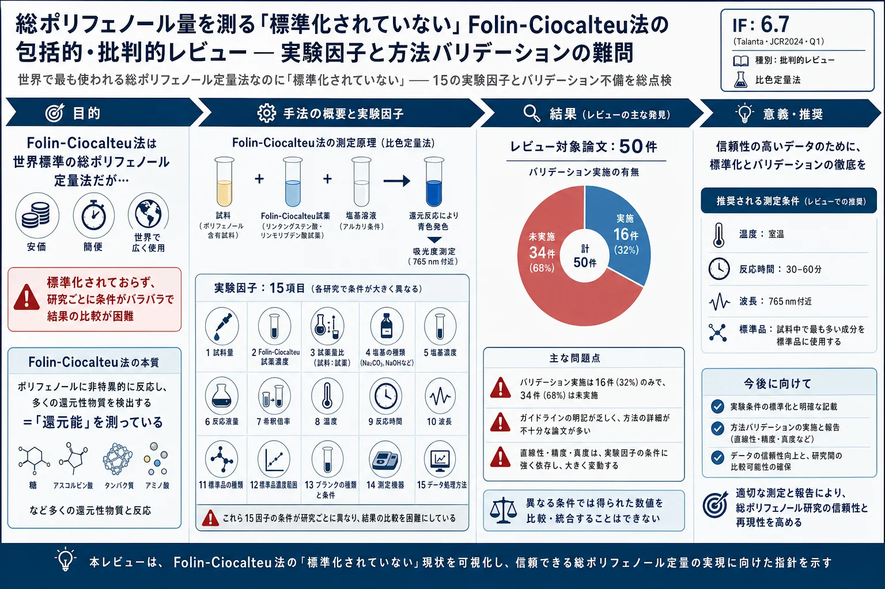

総ポリフェノール量を測る「標準化されていない」Folin-Ciocalteu法の包括的・批判的レビュー — 実験因子と方法バリデーションの難問

<!-- Raposo, Borja, Gutiérrez-González, Talanta 272 (2024) 125771 の全訳密度日本語版。 比色定量法（Folin-Ciocalteu）の批判的レビュー。practitioner レベル。 15の実験因子（2.1-2.15）とバリデーション（3.x）を網羅。表1-3は代表値で要約。 -->
書誌情報
- 標題（原題）: A comprehensive and critical review of the unstandardized Folin-Ciocalteu assay to determine the total content of polyphenols: The conundrum of the experimental factors and method validation
- 著者: Francisco Raposo（責任著者）, Rafael Borja, Julio A. Gutiérrez-González
- 所属: Instituto de la Grasa, スペイン国立研究評議会（IG-CSIC）（スペイン・セビリア）
- 掲載誌・巻号・DOI: Talanta, 272 (2024) 125771. DOI: 10.1016/j.talanta.2024.125771
- インパクトファクター: 6.7（Talanta, JCR 2024 / Clarivate。Q1）
- 受理経過: 2023年11月15日受領／2024年1月29日改訂／2月7日受理／2月15日オンライン公開。© 2024 Elsevier B.V.
- 資金: スペイン科学革新省（PID2020-114975RB-I00）
補足: Folin-Ciocalteu（FC）法は「総ポリフェノール量（TPC）」を測る世界で最も普及した比色定量法で、生薬・漢方・食品・ワイン・茶など天然物のポリフェノール評価に日常的に使われる。本レビューの警鐘は明快で、これほど普及しているのに標準化されておらず、実験条件（15因子）が研究ごとにバラバラで結果が比較できないという現状を50論文から批判的に検証したもの。生薬エキスの品質指標として「総ポリフェノール量」を報告する際の落とし穴を知るのに必須の一本。本文にツムラ（Tsumura And Co.）のダウンロード記録はないが、天然物分析の基礎法として漢方QCにも直結する。
要旨（Abstract）
Folin-Ciocalteu法は総ポリフェノール量の定量で世界中の研究室で最も広く使われる方法とみなせる。このアッセイには多くの異なる変種が科学文献で報告されてきた。本レビューでは、Folin-Ciocalteuアッセイに影響する全実験条件を比較的に評価・議論した。さらに、方法バリデーションに関するわずかな研究を、選択性・直線性・精度・真度・検出限界・定量限界・堅牢性の結果に従って評価した。一般に、レビューした文献から導かれる結果は、選択した実験因子と報告された性能パラメータの双方に応じて広く変動し、公表された全体結果の比較を困難にしている。
キーワード: 実験因子、Folin-Ciocalteu、方法バリデーション、フェノール化合物、ポリフェノール、総ポリフェノール量
1. 序論（Introduction）
ポリフェノール（PPs）という用語は、最も単純なものから最も複雑な構造まで、数千の異なるフェノール化合物が記述されていることを考えると、大きな分子群を含む。化学的観点から、PPsは1つ以上の水酸基を持つ芳香環を少なくとも1つ含む分子。PPsは主に植物の二次代謝産物として生じ、必須の生物活性に関与する。その物理化学的性質により抗酸化性に応じて代謝レドックス反応に参加でき、多くの研究がPPsのヒト健康への正の効果（特に抗酸化による心血管系）を明らかにした。ヒト健康への影響で最も重要な特性はバイオアベイラビリティだが、食品や関連試料での総ポリフェノール量（TPC）とその役割を評価することが非常に重要。
クロマトグラフィーがPPsの定量測定の最も重要な分析ツールとみなされる。しかしTPCの定量には、PPsと比色試薬の反応に基づき反応終点で色の強度に応じて可視域で分光測定する分析法がいくつか利用可能。TPC定量法のうち、Folin-Ciocalteu（FC）法は比較的速く・安価で、洗練された装置・試薬を要さず実行が容易なため、世界で最も広く使われるとみなせる。
現在、FC法はPPsが塩基性pHでFCフェノール試薬（FCR）と反応する事実に基づく。しかし元来の目的はチロシン・トリプトファンの2芳香族アミノ酸と、間接的に総タンパク質量の定量だった。当初はFolin-Denisフェノール試薬が使われたが、レドックス反応の感度を上げ沈殿形成を避けるため化学修飾された。化学的にFCRは2つのナトリウム塩（モリブデン酸・タングステン酸）・2つの無機酸（塩酸・リン酸）・硫酸リチウム・水の混合物。リンモリブデン酸/リンタングステン酸複合体は酸化型で黄色、フェノラートイオンで還元されると強い青色を呈する。発色は酸複合体を還元してより低い原子価の金属を持つクロモゲンを形成する電子移動に基づく。
Singletonらの伝統的研究が広く引用され、ワイン製品や植物抽出物のガイドライン（ISO 14502、欧州薬局方）でTPC日常測定の基礎とされてきた。しかしFC法には多くの変種が記述され、主要実験因子——①試料量（原液または希釈）②FCR ③試料とFCRの混合時間 ④塩基媒体（BM）⑤温度 ⑥測定読取時間 ⑦吸光度測定波長 ⑧結果表現の化学参照標準——で有意に異なる多数の組み合わせが記述されている。加えてFCアッセイの日常的な広い使用のため、しばしば体系的な方法バリデーション（MV）や標準化手順を欠く多くの制御されない変動にさらされてきた。MVは分析手順を意図する目的で受け入れる文書的証拠を確立する基本ステップで、確立された規格・品質要件内で信頼できる結果を得るために重要。
本レビューは2つの主目的で実施: (1) 従来報告された分析方法論を集めアッセイに影響する全実験因子を評価、(2) MVを達成したわずかな研究の性能パラメータを要約。
2. Folin-Ciocalteuアッセイに影響する実験因子の評価
計50研究をこの批判的レビューに含めた（FC・PPs・フェノールを検索語に）。Singletonらの最適化条件: まず試料1 mL（水で少なくとも60 mLに希釈）と2 M FCR 5 mLを約1〜8分混合。次に20%(w/v) Na2CO3溶液15 mLを加え水で総量100 mLに調整。室温で保持し1 cmキュベットで765 nmで吸光度測定。没食子酸（GA）を参照標準に選択。この伝統的方法は総量20 mLに5倍スケールダウン提案（試料2 mL＋希釈FCR 10 mL＋7.5% Na2CO3 8 mL）。以下、FC法に影響する15の実験因子を個別に評価。
2.1 吸光度測定システム: 分光光度計 vs マイクロプレートリーダー
分光光度計とマイクロプレートリーダー（MPR）のどちらを使うか。MPRの欠点は容量の精度と測定担当者の熟練が必要な点。利点は①高速で一度に多数の試料をスクリーニング②少量の試料・試薬③廃棄物少。MPRの吸光度はプレートウェルの短い光路長のため分光光度計の約半分だが、TPC定量上は両者に有意差なし。効率・試薬コスト・緑色化の観点からMPRベースのTPC法を支持。
2.2 試料量（VSAM）
試料量は稀な場合を除き無視できない。VSAMは同時試験できる試料数に反比例し、吸光度測定システムに関連。伝統法ではワイン試料1 mL。文献では10 μL〜2 mLと広範囲。試料量/総量の比も重要で、元の研究では1%だが、大半は高い比（最大25% v/v）を報告。
2.3 希釈水（DW）— 量と添加タイミング
希釈水（make-up water）は適切な吸光度測定のため試料を希釈する水（蒸留・脱イオン水）。DW量は重要因子で希釈率が結果に強く影響。伝統法ではFCR添加前に蒸留水60 mLに希釈。DW添加のタイミングも論争的（FCR前/後、2段階など）。多くの方法論でDW添加が報告されていないのが驚き。FCR前に1段階でDW添加を推奨。
2.4 FCR — 濃度と量
市販FCRは水酸化ナトリウム滴定で2 M。しばしば固定体積比で水希釈が提案され（3.3〜50% v/v、最多は10%）。市販試薬1 mLを水で総量10 mLにする。
2.5 反応時間I — 試料とFCRの混合
伝統法では試料とFCRの反応時間1〜8分。多くの研究がこの情報を欠き、試料と試薬（FCRとアルカリ）を同時混合と誤解されうる。
2.6 塩基媒体（BM）: 化学試薬・濃度・量
BMがヘイズやCO2気泡でTPC比色測定に悪影響しないことを確保。伝統法ではNa2CO3をpH上昇の支持アルカリ媒体に（他にNaOH・NaCN・NaHCO3も）。元来15 mLの20%(w/v)溶液（縮小版8 mLの7.5%）で総反応量中約3%(w/v)のBMを得る。文献では極端に0.3%〜14.6%(w/v)まで。7.5%が多くの出発点。BM濃度は論争的でCarmona-Hernándezらは3.5%を最適とし、Lawagらは蜂蜜の還元糖干渉を減らすため希薄溶液（0.75% vs 7.5%）を推奨。総反応量中約3%(w/v)のNa2CO3維持を提案（逸脱は詳細な正当化が必要）。
2.7 試薬の添加順序
このアッセイは極めて敏感で試薬添加を一定順序で行う。文献は論争的。BoxはアルカリをFCR前後どちらに加えても感度損失なしと報告（アルカリ先добを選好）。一方、希釈条件で試料とFCRを混ぜ最後に炭酸塩水溶液を加えるのが必須。フェノールの空気酸化を避けるためアルカリ前にFCR添加が重要ステップと強調。このFCR先添の方法論に同意。
2.8 総量（VTOT）
反応の総容量は試料・FCR・BMの3固定量＋任意のDW。文献では広く変動。一般的プロトコルは試料あたり100 mL、縮小版20 mL（試薬節約・廃棄コスト減）。20〜25 mL範囲の研究も。適切な装置でさらに縮小可能。
2.9 波長
Singletonの元研究ではヘテロポリ青色複合体が765 nm中心の広い吸収範囲。文献では725〜765 nm。欧州薬局方は760 nm。630 nmという稀な報告も。750と760 nmの吸光度に有意差なしとの報告。
2.10 温度
元来、室温（RT）で発色。温度は反応速度に関連し測定読取時間と連動（高温ほどインキュベーション時間短縮）。温度効果を扱う研究は少ない。Pereiraらは25/30/40℃で青色複合体の形成速度・安定性に効果なしと報告。Carmona-Hernándezらは17℃で36℃より最適TPC値。RTをTPC測定の出発温度とすべき。
2.11 反応時間II — 測定読取
多くの研究がその効果を評価した基本因子。PPs含量・FCR量・BM/アルカリ性・温度が最大発色到達時間に影響する経験的動力学研究で評価すべき。元来120分で反応終点（Lawagらは120分が蜂蜜の還元糖干渉を避けると報告）。この長さは日常分析に不便。60/90/120分で有意差なし（60分推奨）、30/60/90分で有意差なしとの報告。30〜35分区間を超えると吸光度が漸近曲線で緩やか増加後ほぼ安定。試料マトリックスに応じ反応時間30〜60分を提案。
2.12 化学標準
理論上、校正標準は実試料の分析対象化合物と同一であるべき。しかしTPC定量は結果表現・比較のための適切な標準選択の問題を持つ。元のFC法・ワイン茶ガイドラインでは最も広く使われる標準は没食子酸（GA）（満足な溶解性・乾燥形での安定性・比較的安価）。欧州薬局方はタンニン豊富な抽出物にピロガロールを選択。他にカテキン・カテコール・クロロゲン酸・フェルラ酸・タンニン酸なども。Bastolaらは5単一フェノールと7混合を評価しGAを最良の個別標準、5 PPsの混合を複数標準の選択肢とした。Platzerらは多様な参照化合物でTPC結果に有意差を確認——このアッセイはTPCでなく還元能を測っている。PPsの多様性・不均一性を考慮すると、試料中で最も豊富な成分を（市販入手可能なら）標準に選ぶのが最良。
2.13 校正標準の溶媒
溶媒はPPs抽出の観点で評価されてきた（極性・PPs溶解能）が、校正標準調製の溶媒もMVに直結するため考慮すべき。UV-Vis適合溶媒中のアナライト溶液が必要。校正標準は通常、試料調製に使った同じ溶媒（＝試料抽出物）でストックを希釈して調製。報告時の溶媒は水・エタノール・メタノールまたはそれらの混合。Pereiraらは水/40%エタノール水/40%メタノール水を評価し、純水は応答を減らし水-有機混合は影響なしと報告。
2.14 校正範囲
校正範囲は実証された正確性で決定できるアナライトの下限・上限濃度の区間。直線範囲（信号が濃度に正比例）が望ましい。GAを標準とするTPC校正では非常に広範囲（最大1250 mg/L、逆に0〜1 mg/Lも）。試料抽出物の予想濃度に応じた校正範囲選択を提案。
2.15 干渉
FCアッセイはPPsに非特異的で慎重な解釈が必要。元来の目的はチロシン・トリプトファン測定なので両者は干渉種。長年、FCRがPPs以外の抗酸化分子とも反応することが示された。Everetteらは80化合物でFCRの反応性を試験し、多くの非フェノール化合物（還元性を持つ芳香族・脂肪族有機・無機化合物）が相当な反応性を示した。RoverとBrownは糖（フルクトース・グルコースが最高応答）の干渉を評価。FCRはアスコルビン酸・酢酸・ギ酸・タンパク質（元の目的）・還元性多糖とも反応。FCアッセイは実際には実験条件下で容易に酸化される全成分を測っており、フェノールでない/フェノールとまれにしか考えられない物質を含む。
3. Folin-Ciocalteuアッセイのバリデーション
分析校正は実験信号とアナライト濃度の関係を確立する共通の必須ステップ。残念ながら50論文中バリデーション（MV）を扱ったのはGAを標準とした16件のみ。TPC定量のバリデート法の情報を集めた体系的レビューはこれまでない。MVには多くのガイドラインがあるが命名法・手順・実装指針に有意な差がある。収集研究でMV評価基準のガイドライン明記は稀（例外: Anvisa・AOAC・Eurachem・ICH〔最多引用〕・ISO 5725-2・USFDA）。以下、選択性・直線性・精度・真度・LOD・LOQ・堅牢性でまとめる。
3.1 選択性
分析法は目的アナライトのみを干渉なく測るとき選択的。大半の論文でこのパラメータは評価されず（FCが非選択的と既知のため）。Sánchez-Rangelらは抽出物のアスコルビン酸含量でTPC値を補正することを提案。Kupinaらは糖（フルクトース・グルコース・スクロース）で正の効果なしと報告。
3.2 以降 直線性・精度・真度・LOD・LOQ・堅牢性
（Table 2・3にまとめ）代表例: 校正範囲は0〜1 mg/Lから43〜500 mg/Lまで様々、直線点数4〜9水準、反復2〜6。堅牢性は主にブランク（10）や校正曲線・マトリックス効果・機器・照度で評価。LOD/LOQも0.006/0.019 mg/Lから14.2/42.9 mg/Lまで実験因子に依存して大きく変動。全体として、報告された性能パラメータは選択した実験因子に強く連動して広く変動する。
4. 結論（Conclusions）
一方で、FCアッセイは世界中で異なる実験因子で行われ結果に影響してきた。選択性を欠くにもかかわらず、様々なマトリックスのTPC定量に有用な比色法である。文献で最も一般的な変種は: ①総量②吸光度測定システム③試薬添加順序④波長⑤反応時間⑥温度⑦参照標準。マイクロスケール化（高速・低試薬消費・廃棄物減）を推奨。FC反応の結果は試薬添加順序に強く依存。765 nm付近のわずかに異なる波長は比較可能な結果を生む可能性。温度と時間の複合効果はTPC測定で有意——RTと反応時間30〜60分がFC法に適切。化学標準の選択が最も重要で、異なるPPs構造は異なる強度で光を吸収するため吸収値は必ずしも試料濃度を再現しない。試料中で最も豊富な化学成分を標準に選ぶべき。
他方、選択した実験条件によらず、FC法は少なくとも直線性・正確性（精度・真度）でバリデートされねばならない。しかし大半のFC研究でMV不備が認められ、MVガイドラインの記載は乏しく、性能パラメータは広く変動し実験因子に連動していた。適切なMVには水や水-有機混合に溶かした純化学品でなくnative試料（実試料）を使うことが不可欠。試料マトリックスを常に考慮して信頼できる定量TPC結果を得る。
最終結論: FC実験因子が同一でない、かつ/または未知試料分析前にMVが行われていない場合、文献で公表された全体TPC結果の比較は疑わしいとみなせる。
訳者補足
- 本レビューが突く問題: Folin-Ciocalteu法は「総ポリフェノール量（TPC）」を測る定番の比色法で、生薬エキス・食品・お茶の品質指標として論文に山ほど出てくる。しかし本レビューの警告は「これほど普及しているのに標準化されていない」——試料量・試薬濃度・塩基・添加順序・波長・温度・反応時間・標準品という15の条件が研究ごとにバラバラで、別々の論文のTPC値を比べても意味がない、というもの。「〇〇のポリフェノールは△△ mg/g」という数字を鵜呑みにする前に、どの条件で測ったかを確認せよという教訓。
- 「TPCではなく還元能を測っている」: FC試薬は元々チロシン・トリプトファン（アミノ酸）を測るために作られたもので、ポリフェノールに特異的ではない。糖（フルクトース・グルコース）・アスコルビン酸（ビタミンC）・タンパク質・還元性多糖など、還元性を持つ物質なら何でも反応してしまう。つまりFC法が測っているのは厳密には「総ポリフェノール量」ではなく「試料の還元能（reducing capacity）」。生薬・蜂蜜など糖の多いマトリックスでは過大評価に注意（本レビューは蜂蜜で還元糖の干渉例を挙げる）。
- 標準品の落とし穴: TPC値は「没食子酸（GA）換算 mg/g」などと表現されるが、ポリフェノールの種類ごとに吸光度が違うので、GA換算値は本当の濃度を反映しない。本レビューは「試料中で最も多い成分を標準品に選ぶべき」と提言。生薬なら、その生薬の主要ポリフェノール（例: 黄芩ならバイカリン、丹参ならサルビアノール酸）を標準にする方が実態に近い。
- 実務的な推奨条件（著者の見解）: 室温・反応30〜60分・765 nm付近・Na2CO3を総量中約3%・FCR先添（アルカリは後）・マイクロプレート化・そして必ず実試料（native sample）でバリデーション。これらを守れば少なくとも自分の研究内での再現性は確保できる。
- 生薬QCとの関わり: 漢方・生薬エキスの品質評価で「総ポリフェノール量」を指標にする場合、本レビューの15因子を固定し・実試料でバリデーションしないと、バッチ間比較や他施設との比較が成り立たない。本サイトのイチジク・鵝不食草論文などポリフェノールを扱う研究の背景知識として重要。
- 表1（50論文の実験条件一覧）・表2/3（16論文のバリデーション性能）の詳細数値は原文を参照。